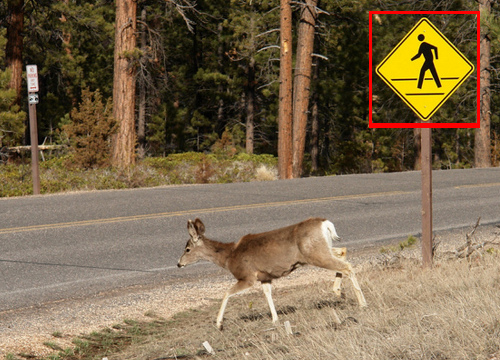

HW4: Object Detection
Due Monday, March 6th in EEE DropBox at 11:59 pm

In this assignment, you will develop an object detector based on gradient
features and sliding window classification.
The following directory contains the some skeleton code to get you started
along with some test images:
Programming: [80 points]
-
Image Gradient: [20 points]
Write a function that takes a grayscale image as input and returns two arrays
the same size as the image, the first of which contains the magnitude of the
image gradient at each pixel and the second containing the orientation.
[mag,ori] = mygradient(I)
Your function should filter the image with the simple x- and y-derivative
filters described in class. Once you have the derivatives you can compute the
orientation and magnitude of the gradient vector at each pixel. You should use
imfilter with the 'replicate' option in order to nicely
handle the image boundaries.
-
Histograms of Gradient Orientations: [30 points]
Write a function that computes gradient orientation histograms over each 8x8
block of pixels. Your function should bin the orientation into 9 equal sized
bins between -pi/2 and pi/2. The input of your function will
be an image of size HxW. The output should be a three-dimensional array ohist
whose size is (H/8)x(W/8)x9 where ohist(i,j,k) contains the count of
how many edges of orientation k fell in block (i,j).
To determine if a pixel is an edge, we need to choose some threshold. I
suggest using a threshold that is a tenth the maximum gradient magnitude in the image
(i.e. thresh = 0.1*max(mag(:))). Since each 8x8 block will contain a
different number of edges, you should normalize the resulting histogram for each
block to sum to 1 (i.e., sum(ohist,3) should be 1 at every block location).
I would suggest your function loops over the orientation bins. For each
orientation bin you'll need to identify those pixels in the image whose
magnitude is above the threshold and whose orientation falls in the given bin.
You can do this easily in MATLAB using logical operations in order to generate
an array the same size as the image that contains 1s at the locations of
every edge pixel that falls in the given orientation bin and is above threshold.
To collect up pixels in each 8x8 spatial block you can use the function
im2col(..,[8 8],'distinct'). The im2col function will
automatically pad out the image to a multiple of 8 which is convenient.
-
Detection: [30 points]
Write a function that takes a template and an image and returns the top
detections found in the image. Your function should have the prototype
[x,y,score] = detect(I,template,ndet) where ndet is the
number of detections to return.
In your function you should first compute the histogram-of-gradient-orientation
feature map for the image, then correlate the template with the feature map.
Since the feature map and template are both three dimensional, you will want to
filter each orientation separately and then sum up the results to get the final
response. This final response map will be of size (H/8)x(W/8).
When constructing the list of top detections, your code should implement
non-maxima suppression. You can do this by sorting the responses in descending
order of their score. Every time you add a detection to the list to return,
check to make sure that the location of this detection is not too close to any
of the detections already in the output list.
Your code should return the locations of the detections in terms of the
original image pixel coordinates so if your detector had a high response at
block (i,j) then you should return (8*i,8*j) as the pixel
coordinates.
Writeup: [20 points]
-
Test your gradient code by running it on an image of your choice. Visualize
the resulting gradient magnitude and orientation using imagesc.
Make sure and use colorbar and a non-grayscale colormap (e.g.,
colormap jet) in order to visualize the orientation values and
title to put informative titles on your plots. Include a plot of
both the magnitude and the orientation in your writeup for some test image.
-
Test your detection code using the provided script and modifying it as
necessary. The script loads in a training image and a test image. You can
click on one or more patches of the training image. The script then builds an
average template using the histogram feature map. Finally the script calls
your detect function using this average template to detect objects in the test
image.
In your writeup should include (a) an example result on the provided test image
along with a visualization of the patches you clicked on to train the template
(b) results of training a template on a different test and training image of
your choosing (e.g. feel free to experiment with detecting cat faces, hands,
cups, chairs or some other type of object). For the best result, you will want
to test on images where the object is the same size as your template.
(c) a brief (1 paragraph) discussion of where the detector works well and when
it fails. Describe some ways you might be able to make it better.
Matlab Tips
- Useful functions for this assignment:
im2double,imshow,ginput,imfilter,sort,ind2sub,im2col,atan
- The script provided for building the template makes a hard-coded
assumption that the template dimension is 128x128 pixels. You may want to
change this depending on the aspect ratio of the object you are interested in
detecting or better yet, make it more flexible so the user can actually draw
a box around the desired object to detect.
Extra-credit
As detailed in the guidelines, any
project handed by 11:59 pm on the previous day will receive 5%
extra credit.
|